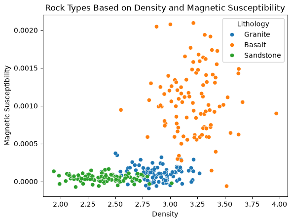

Session 12 · Mon Oct 26 · Book sections 3.1–3.2
🧭
A seismic analyst has labeled ten thousand waveforms. Nobody has labeled a single Argo profile.
What does your data offer: labels, structure, or feedback?
📖 The field’s map: which learning frameworks fit which solid-Earth problems, and why labels are the bottleneck.
Bergen, K. J., Johnson, P. A., de Hoop, M. V., & Beroza, G. C. (2019). Machine learning for data-driven discovery in solid Earth geoscience. Science, 363, eaau0323.
✓ Supervision done at scale: millions of analyst-made arrival picks became the labels for a picker that outperforms its teachers’ consistency.
Zhu, W., & Beroza, G. C. (2019). PhaseNet: a deep-neural-network-based seismic arrival-time picking method. Geophysical Journal International, 216, 261–273.
✓ When labels cost analyst hours: the playbook for letting the model choose which samples to send to the expert.
Settles, B. (2009). Active Learning Literature Survey. Computer Sciences Technical Report 1648, University of Wisconsin–Madison.
✗ The supervision trap, documented: terrain missing from a biased landslide inventory is not a negative label — models trained on incomplete inventories validated well while mapping implausible susceptibility.
Steger, S., Brenning, A., Bell, R., Petschko, H., & Glade, T. (2016). Exploring discrepancies between quantitative validation results and the geomorphic plausibility of statistical landslide susceptibility maps. Geomorphology, 262, 8–23.
The supervision question is where every ML-in-geoscience paper starts — these three show the range.
| The field problem | What the data offers | Framework |
|---|---|---|
| 10,000 analyst-labeled waveforms | a label for every sample | supervised |
| Millions of Argo profiles, zero labels | only the data’s geometry | unsupervised |
| A few mapped landslides, thousands of unvisited hillslopes | few labels + the unlabeled cloud | semi-supervised |
| Decades of continuous seismic archive | data that can hide part of itself | self-supervised |
| A glider choosing where to dive next | consequences, discovered later | reinforcement |
| 100,000 events/yr, analyst time for 2,000 | a model that can ask | active |
The framework is not a preference — it is read off the data you actually have.
Two kinds of question, two kinds of answer:
Same workflow for both; only the type of answer — and therefore the metric — changes.

Synthetic rock-property data (notebook 3.2): three lithologies in a two-feature space — density and magnetic susceptibility. The labels are the supervision.
1/3 baseline: always guess the most common rock
0.80 k-NN accuracy on the test set — touched once
The validation set chose k = 9 from {1, 3, 5, 9, 15}; the test set only confirmed it.
No baseline, no meaning: 0.80 matters because the trivial predictor gets 0.33.
R² = −0.01 baseline: predict the training mean everywhere
R² = 0.947 degree-2 polynomial, test set — touched once
R²: 1 = perfect, 0 = no better than the mean. Validation preferred the polynomial (MSE 4.80) over the line (5.09) — the truth has a quadratic term.
Baseline → candidate models → choose on validation → confirm once on test. Every time.
| Set | Share | Its one job | Rock-type example |
|---|---|---|---|
| Training | 60% | fit the model’s parameters | k-NN stores the labeled samples |
| Validation | 20% | compare models, tune choices | picked k = 9 of {1…15} |
| Test | 20% | one final honest number | accuracy 0.80, reported once |
| Baseline | — | the score any model must beat | 0.33 by always guessing |
Evaluation happens on data the model has not seen — the rule every notebook in this chapter enforces.
pixi run jupyter lab → 3.2_classification_regression.ipynbWed: structure without labels — clustering (3.3) · Ch 2 quiz closes Wed · Project proposals due Fri Oct 30
ESS 469/569 · Machine Learning in the Geosciences · Autumn 2026